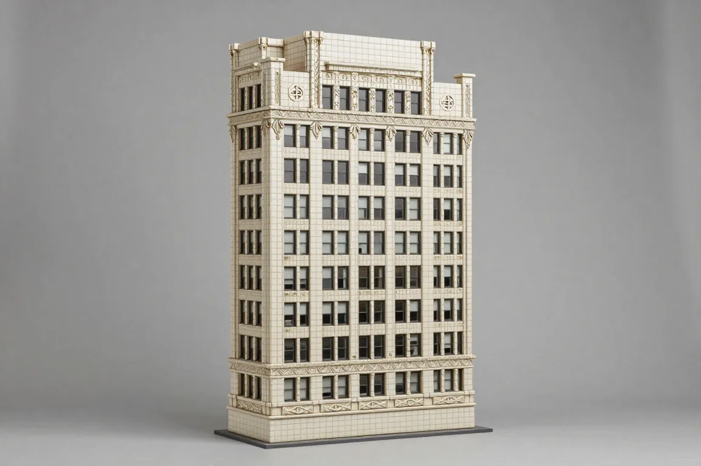

Тонкая огнеупорная терракотовая облицовка на стальных каркасах первых небоскрёбов. Чикагские архитекторы делали из неё плоские белые или кремовые стены и текучий растительный орнамент.

Главная идея
Когда нагрузку несёт стальной каркас, стена становится кожей: тонкая глиняная плитка защищает сталь от огня и несёт орнамент.
Принципы дизайна
Вешайте тонкую полую терракотовую плитку на стальной каркас; плитка нагрузки не несёт.
Держите стену плоской и разбитой сеткой, которая показывает каркас за ней.
Берите кремовую, палевую или белую глазурь, чтобы глина с улицы выглядела одного цвета.
Моделируйте орнамент как текучие растения и геометрические узлы, низким рельефом, на простенках и подоконных поясах.
Обжигайте плитку жёстко, чтобы она защищала сталь от огня и дождя.
Делайте каждую деталь в форме и привязывайте её к номеру на плане.
Покрывайте весь фасад одним материалом, от основания до карниза.
Антипаттерны
Толстая каменная стена, несущая нагрузку
Тяжёлый классический орнамент без связи с каркасом